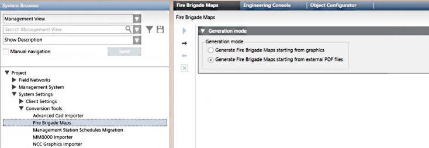
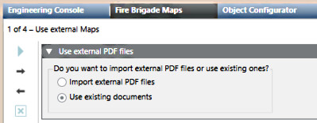
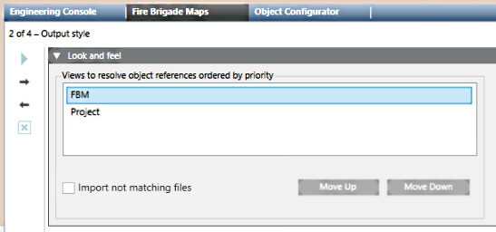
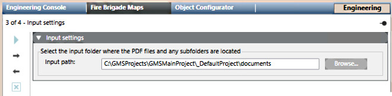
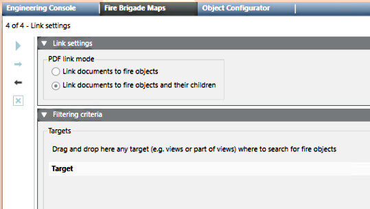
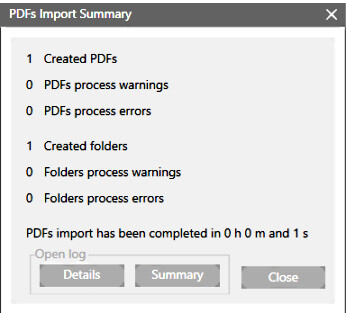

Generating Fire Brigade Maps From PDFs
This procedure covers how to generate fire brigade maps starting from external PDF files. The fire brigade maps generator can link PDF files to corresponding fire objects. For general information about the fire brigade maps generator, see the reference section.
Prerequisites
- The following extension module is installed and included in the active project:
- Danger Management > Fire Brigade Maps
- The fire brigade maps option (sbt_gms_opt_fbm) is included in the Desigo CC license. For more information, see Checking license.
The license option enables both the fire brigade maps generation in Engineering mode, and the access to the corresponding documents as Related Items of the fire objects in Operating mode. - You have available, to import or already imported, the pdf files corresponding to the maps, with the correct naming. For detailed information, see External PDFs Naming Convention.
- You have defined if you want to restrict the map creation to specific segments of the System Browser tree.
- System Manager is in Engineering mode.
- System Browser is in Management View.
Procedure
- In System Browser, select Project > System Settings > Conversion Tools > Fire Brigade Maps.
- Select the Fire Brigade Maps tab.
- In the Generation mode expander, select Generate Fire Brigade Maps starting from external PDF files.

- Click
 to proceed to the next page.
to proceed to the next page. - In the Use external PDF files expander, do one of the following:
- Select Import external PDF files if you have ready-to-import pdf files to which you can link the corresponding fire objects.
- Select Use existing documents if you have already imported into Desigo CC the pdf files to which you can link the corresponding fire objects.

- In the Look and feel expander, check the Views to resolve object references ordered by priority:
- You can select a view and click Move Up or Move Down to adjust the priority.
- Check the list in Views to resolve object references ordered by priority. Select a single View and click Move Up or Move Down to change the priority as necessary.
- (Optional) If you also want to import PDF files that do not match fire objects and make them available in the Documents application, select Import not matching files checkbox.

- Click .
- In the Input settings expander, click Browse and select the folder where the PDF files and any subfolders are located in Desigo CC documents or computer file system.

- Click .
NOTE: If you are importing external PDF files and some files point to the same fire objects, a dialog box will alert you of the affected PDF files and it will be impossible to continue. To correct the conflict you will need to rename the files correctly, see External PDFs Naming Convention. - In the Link settings expander, set the desired PDF link mode:
- Link documents to fire objects to link documents to the corresponding Fire Zones.
- Link documents to fire objects and their children to link documents to the corresponding Fire Zones and also to their detectors.
- In the Filtering criteria expander, you can:
- Drag-and-drop drag one or more parts of the System Browser tree to the Target area to only consider that part of the plant.
Doing so narrows the set of objects to only consider those in selected parts of the installation. For example, one or more buildings or floors. - Use the Remove button to remove unwanted target subtrees.

- At this point you are ready to start the generation process. If required, you can use the Previous
 button to review or change the preceding settings and the Next button to return to this final page again.
button to review or change the preceding settings and the Next button to return to this final page again. - Click Start
 and then click Yes to confirm the start of the maps linking process.
and then click Yes to confirm the start of the maps linking process. - A progress bar displays. At any time, you can click and confirm to stop the procedure.
- If you navigate away, by clicking any other node in System Browser, you will be asked whether to continue map generation:
- Click Yes to continue the map generation in background
- Click No to interrupt map generation
- Click Cancel to cancel the new node selection and remain in the Fire Brigade Maps generator page
- When the import procedure finishes, the PDFs Import Summary dialog box displays the number of PDF maps and folders.
NOTE: If duplicates were found in the views, a dialog box will alert you of the affected target views and it will be impossible to continue. You must repeat from step 12: remove the indicated targets and drag only those you are interested in. 
- Click Summary to display the summary log file: [drive]:\Users\[username]\AppData\Local\Temp\FireBrigadeMaps_mm-dd-yyyy_nn.txt. The file provides a report with summary information from the dialog box and any errors or warnings.
- Click Details to display the detailed log file: [drive]:\Users\[username]\AppData\Local\Temp\FireBrigadeMaps Results yyymmdd hhmmss.txt). The CSV file contains a record of all symbols processed.
For examples of log files, see Fire Brigade Maps Generator Log Files.
In case of errors, see Fire Brigade Maps Generator Troubleshooting.